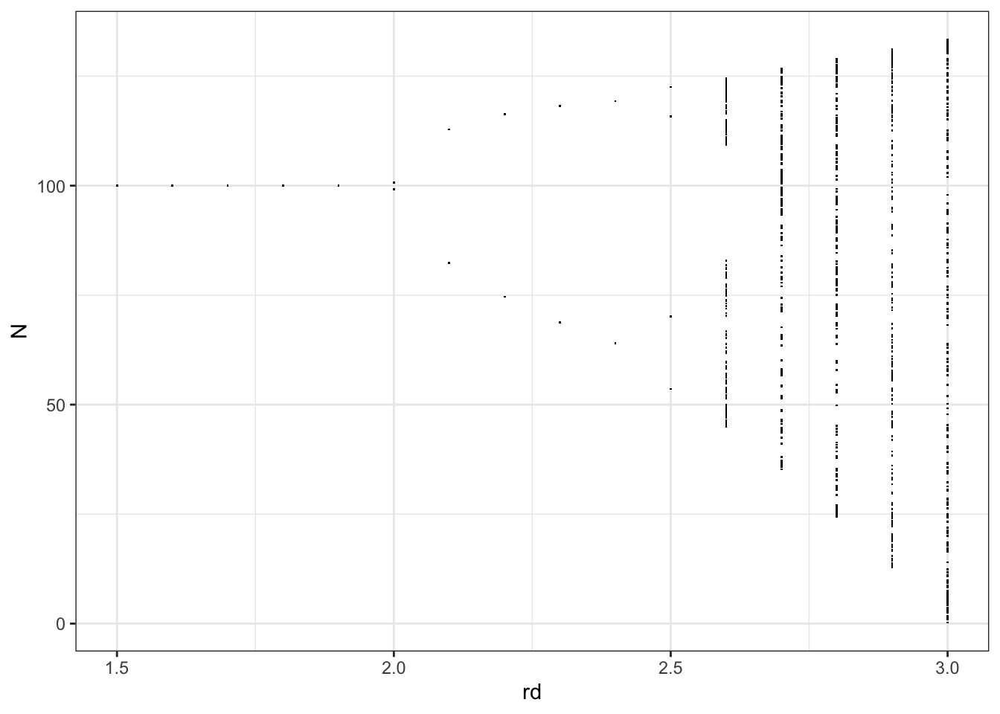
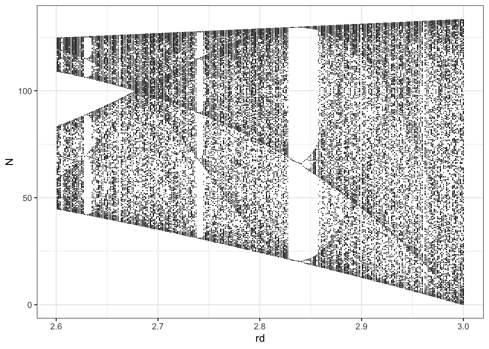
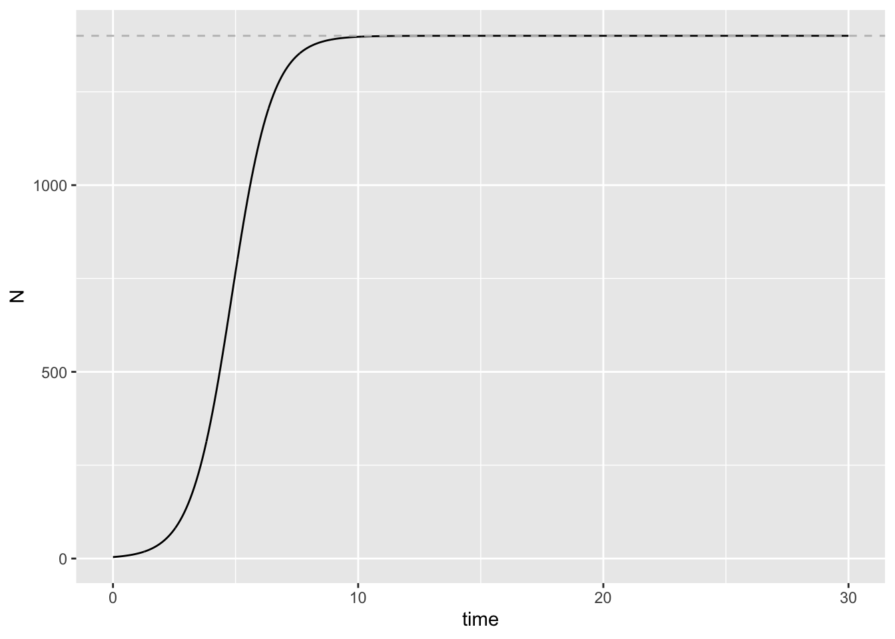

Solutions: Exercise 2.2 - Survey of ecological models, Part 2
Jelena H. Pantel
2023-11-16 19:59:47.294443
Instructions
Create either an R script (.R file) or R Markdown document (.Rmd) to save all of your work for today.
Exercise 1. Work with simulation of discrete-time logistic growth
In class, I discussed how making simulations of the models we learn in class can help us understand how our system works. Let’s take a closer look at the discrete-time model of logistic population growth. The model formula is:
\[n_{t+1} = n_t + rn_t(1 - \frac{n_t}{K})\] And the simulation works as follow:
# Parameter values to use for simulation
r <- 1.21
K <- 1400
N0 <- 4
t <- 30
# model function
disc_log <- function(r, N0, K) {
Nt1 <- N0 + r * N0 * (1 - N0/K)
return(Nt1)
}
# Simulation of model for t time steps
N <- rep(NA, t)
for (i in 1:t) {
N[i] <- disc_log(r, N0, K)
N0 <- N[i]
}
# Plot simulation: ggplot
dat <- as.data.frame(N)
dat$time <- as.numeric(rownames(dat))
ggplot2::ggplot(dat, aes(time, N)) + geom_point() + geom_hline(yintercept = K,
linetype = "dashed", color = "gray")# Plot simulation: base R
plot(N, xlab = "time", ylab = "N", pch = 19, col = "black")
abline(h = K, col = "grey", lty = "dashed")Question 1. Please change the simulation to run with a growth rate of 2.2, and show me a plot of the population dynamics over time.
# Parameter values to use for simulation
r <- 2.2
K <- 1400
N0 <- 4
t <- 30
# Simulation of model for t time steps
N <- rep(NA, t)
for (i in 1:t) {
N[i] <- disc_log(r, N0, K)
N0 <- N[i]
}
# Plot simulation: ggplot
dat <- as.data.frame(N)
dat$time <- as.numeric(rownames(dat))
ggplot2::ggplot(dat, aes(time, N)) + geom_point() + geom_line(color = "grey") +
geom_hline(yintercept = K, linetype = "dashed", color = "grey")# Plot simulation: base R
plot(N, xlab = "time", ylab = "N", pch = 19, col = "black")
lines(N, col = "grey")
abline(h = K, col = "grey", lty = "dashed")Question 2. A. Use R’s index syntax
var[i] - where var is the name of your variable
and [i] is the ith position of that variable - to
show me the value of population size N at time 5, 6, and
7.
N[5:7]## [1] 993.4435 1628.1292 1044.4632B. Use the `disc_log’ function to calculate the value of N at time 6 using the value of N at time 5 for N0
disc_log(r, N[5], K)## [1] 1628.129C. Use the `disc_log’ function to calculate the value of N at time 7 using the value of N at time 6 for N0
disc_log(r, N[6], K)## [1] 1044.463D. Use the formula above for discrete-time logistic growth to calculate population size at time 7 using the value of N at time 6 for N0
N[6] + r * N[6] * (1 - (N[6]/K))## [1] 1044.463E. Why is the population not going to its carrying capacity K? How many periodic attractors (values of N for which the system is stably drawn towards) are there in this system? In other words, how many values does N cycle between when r = 2.2, and what are those values of N?
# 2 stable attractors 1044 and 1628Question 3. Look at the bifurcation plot for this discrete-time logistic growth system:

We see that as r increases the number of attractors continues to double, growing geometrically. Eventually, we reach a point when there becomes an infinite number of unique points, that are determined by r. This completely deterministic, non-repeating pattern in N is a property of chaos. Chaos is not a random phenomenon; rather it is the result of deterministic mechanisms generating non-repeating patterns.
A. How many periodic attractors are there at r = 2, 2.1, 2.2, 2.3, 2.4, and 2.5?
# We read this directly from the graph: 2, 2, 2, 2, 2, 4B. How many periodic attractors are there at r = 2.55? I share the code below to produce a finer scale of r values:
# We read this directly from the graph: 8
dlogistic <- function(t, y, p) {
N <- y[1]
with(as.list(p), {
N.diff <- rd * N * (1 - alpha * N)
return(list(N.diff))
})
}
rd.s <- seq(2.4, 2.7, by = 0.01) # the actual rd values
t <- 0:1000 # how long to run each population
N0 <- c(N = 99) # N-zero
## do all the dynamical simulations putting each run into a
## column of a matrix.
Ns <- sapply(rd.s, function(r) {
p <- c(rd = r, alpha = 0.01)
outd <- deSolve::ode(y = N0, times = t, func = dlogistic,
parms = p, method = "euler")[, 2]
})
out <- data.frame(t = t, Ns) # put times to the front of the matrix
names(out) <- c("t", paste("rd=", rd.s, sep = "")) # relabel columns
out.last <- subset(out, t > 0.8 * max(t)) # keep only the last 20%
## put the data in the 'long format'
out.l <- pivot_longer(out.last, cols = -1, names_to = "r.d",
values_to = "N")
out.l <- dplyr::arrange(out.l, r.d, t) # re-order the data
## extract text out of the 'r.d' label that is the numeric
## value
text.values <- substr(out.l$r.d, regexpr("=", out.l$r.d) + 1,
100)
## convert the characters of '1.5' to the number 1.5
out.l$rd <- as.numeric(text.values)
## plot the stable limits to show the bifurcations
ggplot(out.l, aes(rd, N)) + geom_point(pch = ".") + theme_bw() +
scale_x_continuous(breaks = seq(2.4, 2.7, by = 0.04))C. Let’s look closer at the chaotic portion of the graph, with a much finer range of r values. Convince yourself about chaos - that a TINY change in the parameter value r can lead to very different observed dynamics of N. You can read a bit more about chaos at this link: (https://geoffboeing.com/2015/03/chaos-theory-logistic-map/)
num.rd <- 1001 # the number of rd's you want
rd.s <- seq(1.5, 3, length = num.rd) # the actual rd values
t <- 0:1000 # how long to run each population
N0 <- c(N = 99) # N-zero
## do all the dynamical simulations putting each run into a
## column of a matrix.
Ns <- sapply(rd.s, function(r) {
p <- c(rd = r, alpha = 0.01)
outd <- deSolve::ode(y = N0, times = t, func = dlogistic,
parms = p, method = "euler")[, 2]
})
out <- data.frame(t = t, Ns) # put times to the front of the matrix
names(out) <- c("t", paste("rd=", rd.s, sep = "")) # relabel columns
out.last <- subset(out, t > 0.8 * max(t)) # keep only the last 20%
## put the data in the 'long format'
out.l <- pivot_longer(out.last, cols = -1, names_to = "r.d",
values_to = "N")
out.l <- dplyr::arrange(out.l, r.d, t) # re-order the data
## extract text out of the 'r.d' label that is the numeric
## value
text.values <- substr(out.l$r.d, regexpr("=", out.l$r.d) + 1,
100)
## convert the characters of '1.5' to the number 1.5
out.l$rd <- as.numeric(text.values)
out.l.chaotic <- subset(out.l, rd > 2.6)
ggplot(out.l.chaotic, aes(rd, N)) + geom_point(pch = ".") + theme_bw()
Question 4. Plot dynamics in the discrete-time logistic growth system.
In class, I showed a plot of population dynamics then ran the simulation for 8 different values of the population growth rate r :
# Parameter values to use for simulation
r_range <- c(0, 1, 1.3, 1.6, 1.9, 2.2, 2.5, 2.8)
K <- 1400
N0 <- 4
t <- 30
# Simulation of model for t time steps
N.g <- numeric()
plist <- list()
for (i in 1:length(r_range)) {
N <- rep(NA, t)
for (k in 1:t) {
N[k] <- disc_log(r_range[i], N0, K)
N0 <- N[k]
}
dat <- as.data.frame(N)
dat$time <- as.numeric(rownames(dat))
dat$r <- rep(r_range[i], t)
N.g <- rbind(N.g, dat)
N0 <- 4
p <- ggplot(dat, aes(time, N)) + geom_point() + geom_line(color = "gray") +
geom_hline(yintercept = K, linetype = "dashed", color = "orange")
plist[[i]] <- p
}
gridExtra::grid.arrange(grobs = plist, nrow = round(length(r_range)/3))Please use this plotting code to show dynamics for r = 2, 2.2, 2.4, 2.5, 2.55, and 2.8, for 50 time steps. Please use RMarkdown to write an informative caption for this figure, explaining what the graphs show. You can use this link: (https://uoepsy.github.io/scs/rmd-bootcamp/06-figs.html#captions)
# Parameter values to use for simulation
r_range <- c(2, 2.2, 2.4, 2.5, 2.55, 2.8)
K <- 1400
N0 <- 4
t <- 50
# Simulation of model for t time steps
N.g <- numeric()
plist <- list()
for (i in 1:length(r_range)) {
N <- rep(NA, t)
for (k in 1:t) {
N[k] <- disc_log(r_range[i], N0, K)
N0 <- N[k]
}
dat <- as.data.frame(N)
dat$time <- as.numeric(rownames(dat))
dat$r <- rep(r_range[i], t)
N.g <- rbind(N.g, dat)
N0 <- 4
p <- ggplot(dat, aes(time, N)) + geom_point() + geom_line(color = "gray") +
geom_hline(yintercept = K, linetype = "dashed", color = "orange")
plist[[i]] <- p
}
gridExtra::grid.arrange(grobs = plist, nrow = 3)A figure of population size over time using the discrete-time logistic growth model
Exercise 2. Create simulation of continuous-time Lotka-Volterra competition model
Here is code for a continuous-time logistic growth model:
The formula:
\[ \frac{dn}{dt} = rn(1-\frac{n}{K})\] The code:
# Parameter values to use for simulation
parameters <- c(r = 1.21, K = 1400)
state <- c(N = 4)
times <- seq(0, 30, by = 0.01)
# model function
cont_log <- function(t, state, parameters) {
with(as.list(c(state, parameters)), {
dN <- r * N * (1 - N/K)
return(list(dN))
})
}
# Simulation of model for t time steps
out <- deSolve::ode(y = state, times = times, func = cont_log,
parms = parameters)
# Plot simulation: ggplot
out.g <- as.data.frame(out)
ggplot2::ggplot(out.g, aes(time, N)) + geom_line() + geom_hline(yintercept = K,
linetype = "dashed", color = "gray")
# Plot simulation: base R
plot(out.g$time, out.g$N, xlab = "time", ylab = "N", pch = 19,
col = "black")
abline(h = K, col = "grey", lty = "dashed")
A. Please modify this to create a simulation of the continuous time Lotka-Volterra competition equations, seen as equations 3.15 in Otto & Day Chapter 3.
The formula:
\[\begin{aligned} \frac{dn_1}{dt} &= r_1 n_1(1 - \frac{n_1 t + \alpha_{12} n_2}{K_1}) \\ \frac{dn_2}{dt} &= r_2 n_2(1 - \frac{n_2 t + \alpha_{21} n_1}{K_2}) \end{aligned}\] The parameters you will need are:
r1, r2, K1, K1, alpha_12, alpha_21, n1_0, n2_0
Use these values:
r1 = 1.3, r2 = 1.5, K1 = 1,400, K2 = 1,000, alpha_12 = 0.4, alpha_21 = 0.6, N1_0 = 5, N2_0 = 5
Note: be very careful with your parentheses
Here I show with prompts what code you need to fill in. Then I show my code for running the continuous simulation and plotting.
# Parameter values to use for simulation
parameters <- 1 ## fill in param values where the 1 is
state <- 1 ## fill in initial values for state variables where the 1 is
times <- 1 ## fill in values for time intervals where the 1 is
# model function
cont_LV <- function(t, state, parameters) {
with(as.list(c(state, parameters)), {
## fill in equation for N1 fill in equation for N2
return(list(c(dN1, dN2)))
})
}# Parameter values to use for simulation
parameters <- c(r1 = 1.3, r2 = 1.7, K1 = 1400, K2 = 1000, alpha_12 = 0.4,
alpha_21 = 0.6)
state <- c(N1 = 5, N2 = 5)
times <- seq(0, 100, by = 0.1)
# model function
cont_LV <- function(t, state, parameters) {
with(as.list(c(state, parameters)), {
dN1 <- r1 * N1 * (1 - ((N1 + alpha_12 * N2)/K1))
dN2 <- r2 * N2 * (1 - ((N2 + alpha_12 * N1)/K2))
return(list(c(dN1, dN2)))
})
}# Simulation of model for t time steps
out <- deSolve::ode(y = state, times = times, func = cont_LV,
parms = parameters)
# Plot simulation: ggplot
out.g <- as.data.frame(out)
out.melt <- reshape2::melt(out.g, id.var = "time")
ggplot2::ggplot(out.melt, aes(x = time, y = value, col = variable)) +
geom_line()# Plot simulation: base R
plot(out.g$time, out.g$N1, xlab = "time", ylab = "N", col = "black",
type = "l")
lines(out.g$time, out.g$N2, col = "skyblue")
OPTIONAL BONUS CONTENT
Amazing animated graph by classmate Tina Ross! Animation of discrete-time logistic growth graphs across values of r
# set my parameters
rs <- c(2, 2.2, 2.4, 2.5, 2.55, 2.8)
t <- 50
N0 <- 4
K <- 1400
grid.log <- as.data.frame(matrix(NA, nrow = t + 1, ncol = length(rs) +
1))
colnames(grid.log) <- c("t", paste("r", rs, sep = ""))
grid.log$t <- c(0:t)
ggrid <- list()
for (i in 1:length(rs)) {
r <- rs[i]
N <- c(N0, rep(NA, t))
for (j in 1:t) {
N[j + 1] <- disc_log(r, N[j], K)
}
grid.log[, i + 1] <- N
ggrid[[i]] <- ggplot(grid.log, aes(x = t, y = .data[[names(grid.log)[i +
1]]])) + geom_line(col = "turquoise") + geom_point(size = 1,
shape = 19, col = "turquoise4") + geom_hline(yintercept = K,
linetype = "dashed", color = "grey60") + theme_light() +
labs(title = (paste("r =", rs[i])), y = "N", x = "t (days)") +
theme(axis.title.y = element_text(angle = 0, vjust = 0.5))
}
remove(i, j)
grid.long <- melt(grid.log, id.vars = "t", variable.name = "r",
value.name = "N")
grid.long$r <- as.numeric(substring(grid.long$r, 2))
aux <- data.frame(x = c(0:t), y = rep(K, t + 1))
gganimate::animate(ggplot(grid.long, aes(x = t, y = N)) + geom_line(col = "turquoise") +
geom_line(data = aux, aes(x = x, y = y), linetype = 2, color = "grey60") +
geom_point(size = 2, shape = 19, col = "turquoise4") + scale_x_continuous(expand = c(0,
0)) + theme_light() + theme(axis.title.y = element_text(angle = 0,
vjust = 0.5)) + transition_states(r, transition_length = 1,
state_length = 1) + labs(title = "r = {closest_state}", y = "N",
x = "t (days)") + ease_aes("sine-in-out"), renderer = gifski_renderer())